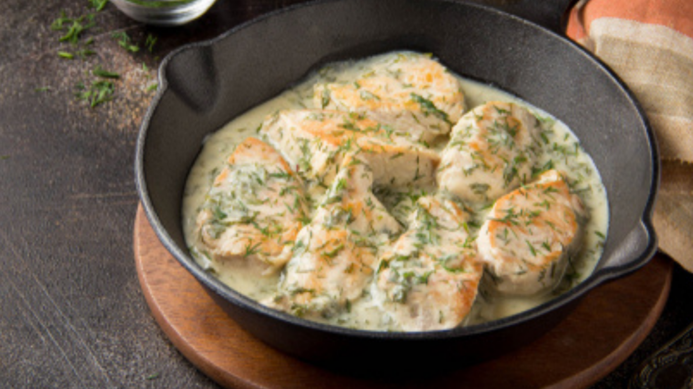

Pollo al verdeo

Pechuga de pollo trozada con salsa de verdeo
Ingredientes
- Pechuga de pollo
- Aceite
- Cebolla
- Ajo
- Cebolla de Verdeo
- Crema para cocinar
- Pimienta negra, Nuez mozcada, Sal y Azucar
Pasos a seguir
- Poner a cocinar las pechugas trozeadas en Aceite, (estarán listas cuando se doren de ambos lados)
- Saltear Cebolla y Ajo
- Agregar crema
- Condimentar a gusto
- Revolver 5 minutos
- (Opcional)Agregar el pollo dorado a la olla con salsa
Nota:El pollo tarda mucho mas en cocinarce de lo que la salsa en hacerse, por lo que se recomienda comenzar a hacer la salsa cuando el pollo esté cocinado casi por completo.
Volver al menú de Recetas de Odín